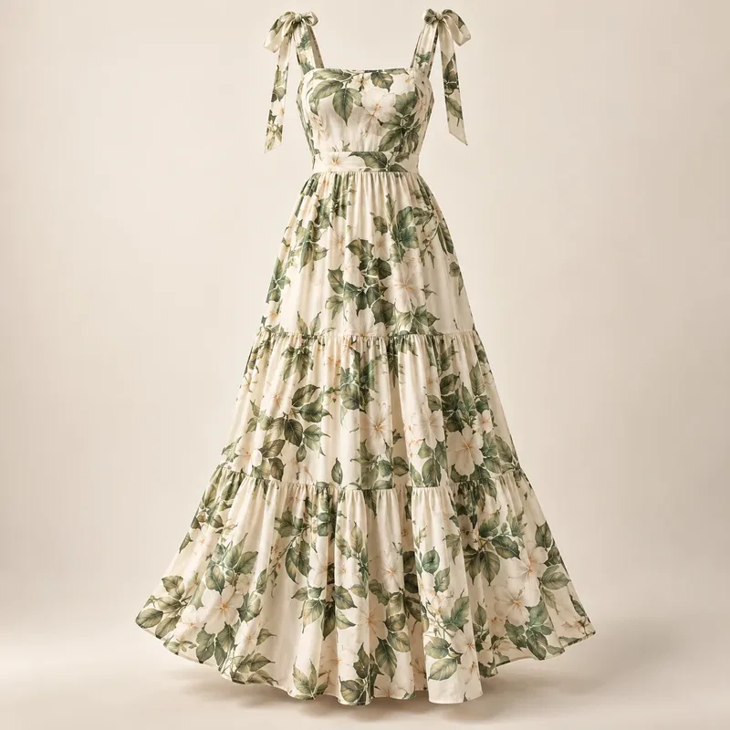
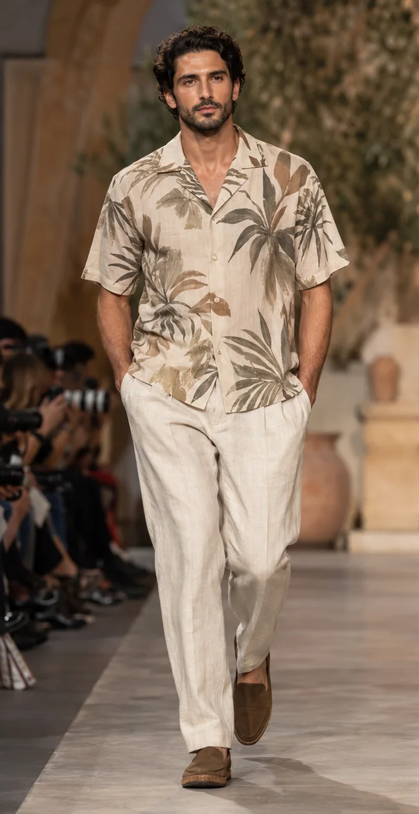

Selling into Brazil: SPFW N61, beachwear exports and the southern summer
What São Paulo Fashion Week N61 showed, why Brazilian beachwear is courting US buyers, and how to time ranges for Brazil's summer, Carnival 2027 and SS27.

Brazil is the largest fashion market in South America, and its calendar runs opposite to Europe and North America. While northern stores move into winter, Brazil is heading into its summer, its Christmas and New Year holidays and, in early February 2027, Carnival. October 2026 gave the trade two useful signals: São Paulo Fashion Week N61, which closed the event's 30th-anniversary celebrations, and fresh results from Brazil's beachwear export push into the United States. This guide reads both for designers, brands and manufacturers planning to sell into or source from Brazil.
SPFW N61 at a glance
SPFW N61 ran from 13 to 18 October 2026, mainly at the Pavilhão das Culturas Brasileiras (Pacubra) in Ibirapuera Park, with some shows at outside locations. House of Models, updating its line-up guide on 13 October, counts 24 shows on the final schedule (19 at Pacubra and 5 offsite), down from the 26 first announced. Uran Rodrigues reports that the edition closed the 30-year celebrations under the theme "Imaginários", with an exhibition of works by Brazilian artists and an SPFW Academy programme. The organiser, IMM, now runs two national weeks a year: Rio de Janeiro Fashion Week in April and SPFW in October.
The biggest story was geography. House of Models describes a line-up that moved beyond the São Paulo establishment, with labels from Ceará (Catarina Mina), Bahia (Dendezeiro, Santa Resistência), the North (Normando) and Minas Gerais (Aluf, Hisha, Apartamento 03). Many shows dealt with territory, identity, memory, craft and popular culture. Adams Magazine highlighted the value placed on handwork and the debut of Ammi, a label built on crochet.
The trends that came off the runway
Fashion Bubbles and CNN Brasil, summarised in Forecut's South America data, list twelve directions from the week. The most useful for range planning are:
- Full "Aladdin" trousers (ALUF, Lilly Sarti, Uó) and hip volume, with balloon shapes: a counterpoint to body-skimming beachwear.
- Halter necks and off-the-shoulder ruffles: shoulder-baring necklines for heat and evening.
- Satin and intense red: shine and one strong colour rather than all-over print.
- Macramé and crochet with fringe, plus patchwork: visible handwork, echoed by Catarina Mina's droplet beadwork and Ammi's crochet couture.
- Printed sets and graphic tees, with À La Garçonne's trompe-l'oeil shirt prints, and João Pimenta's gender-fluid tailoring with sheer panels.
These signals line up with the Rio week in April. FashionUnited reported five Rio SS27 directions: black architectural minimalism, reworked suits, crochet and open weaves for day-to-evening cover-ups, one-shoulder swimsuits for more body types, and maximalism built on Brazilian craft.
Beachwear: Brazil's export calling card
Swim and beachwear are where Brazil sells hardest abroad. Texbrasil, the export programme run by the textile association Abit with the trade agency ApexBrasil, reports that 46 Brazilian brands took part in Miami Swim Week events from late May to early June 2026, at SwimShow, Curve Miami, the Cabana Show and Colombiamoda Miami. The delegation generated more than US$1.65 million in business at the events, with about US$4.7 million expected over the following 12 months and more than 1,500 buyer contacts. Organisers described the brands' pitch as quality, creativity, artisanal work and handmade techniques. For a 2025 edition, Texbrasil noted that show dates had moved to match the Caribbean and US cruise-season buying calendar.
For buyers outside Brazil, this makes the country a practical source for premium swim, cover-ups and resort pieces with craft detail. For brands selling in, it means local competition in swim is strong and well-funded, so imported ranges need a clear point of difference.
Northern SS27 details that suit Brazil
Forecut's SS27 tracking shows several details already rising that match what Brazilian runways showed:
- Crochet tops and cardigans and printed resort shirts (rising): beach-to-bar pieces that fit the crochet and printed-set stories.
- Halter-neck dresses (emerging) and sheer organza overlays (rising): line them for opacity and keep weights light.
- Wrap mini skirts and linen and seersucker shirts (rising): easy, breathable separates for coastal cities.
- Woven leather mules and fisherman sandals (rising): craft footwear for the long summer.

Timing: two calendars at once
- Now to February 2027: Brazil is in its spring and summer. Resort 27 ideas and summer-weight pieces sell now; Christmas, New Year and Carnival (Tuesday 9 February 2027) are the peaks. Land Carnival stock by mid-January.
- March to August 2027: local autumn and winter. Northern AW26 ideas work in lighter weights for the tropical north, with leather and knits for São Paulo and the south.
- September 2027 to February 2028: northern SS27 trends reach Brazilian stores for the following summer, a full season after Europe and the US.
- Adapt fit and cut rather than just shipping northern stock: Forecut's data notes a preference for colour, body-confident fits, swim, denim and local designer brands.
- If you source in Brazil, plan swim and resort orders around the May–June Miami trade window, when Brazilian brands present to North and Central American buyers.